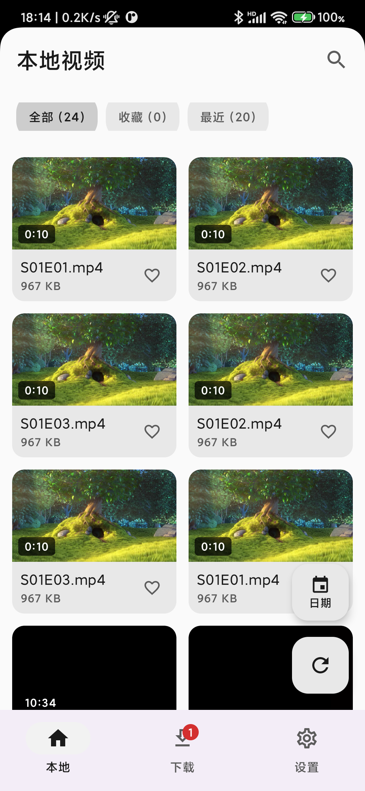
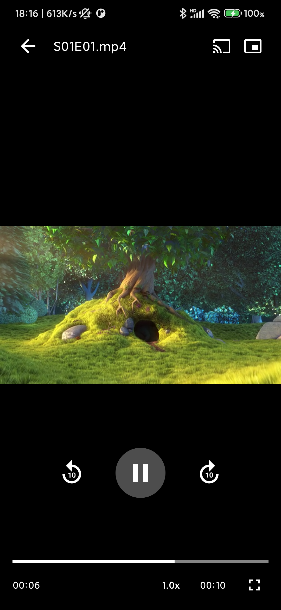
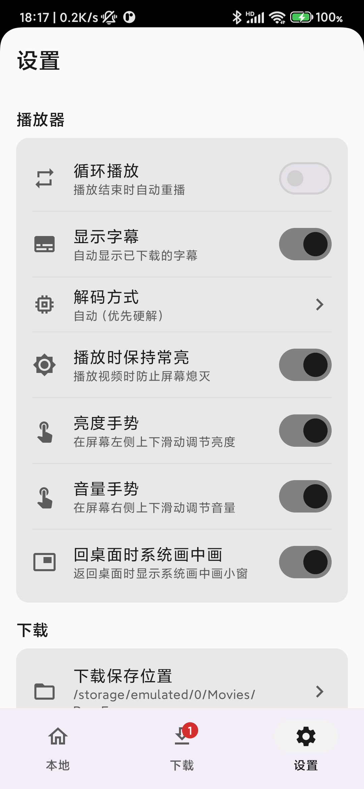

纯粹观影，只留帧影
Pure viewing, frame by frame



Features
自动扫描本地视频，硬解 / 软解 / 自动三档解码，软解扩展 DTS/AC3/EAC3 音轨与 H.264/HEVC/VP9，倍速 0.5x ~ 3x。
短视频式交互：全屏跟手上滑下一条、下滑上一条，播完自动连播；也可切回经典的亮度 / 音量手势。
自动发现局域网电视与盒子，推送播放，支持音量与进度控制；无 GMS 设备自动降级。
magnet 磁链、.torrent 种子与 HTTP 直链三种方式，多任务并行、后台下载、仅 Wi-Fi 可选。
下载到约 10% 即可开看，已缓存区域随意拖动，播放完全不影响下载速度。
自动加载同目录同名 SRT/ASS/SSA/VTT 字幕；同目录剧集按自然排序自动衔接下一集。
Download · Android 8.0 及以上